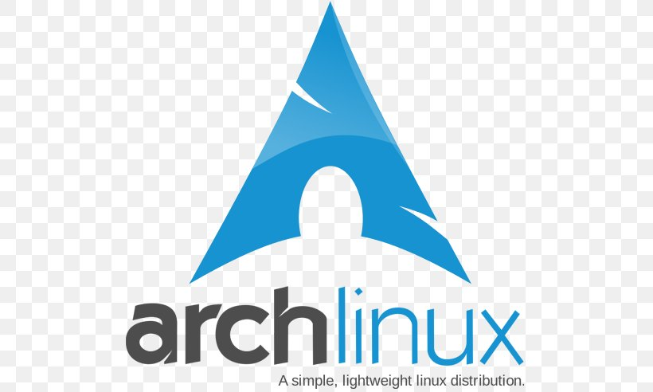

Blog post 01
First of all, if you are here reading about this topic, that means that you already thought about switching to Linux from you current OS or at least you are thinking about it. Well, good for you! There are many reasons why you should use Linux as an OS and I will try to tell and explain you most of them. Because Windows is a the most popular OS out there, I will assume that you're coming from Windows.
This is not a Wikipedia article, so I won't get very technical with you or talk about Linux history or anything like that, but I will present you couple of reasons why Linux is just better than Windows.
Security!
The fact that even Microsoft uses Linux for their servers and most of the companies, labs and factories use it as well speaks for it self. But why is that? Simple truth is that Linux is just more reliable and secure then any other OS out there.
Linux is an open source project, so anyone out there can see and manipulate it's code for their own purpose, with enough knowledge of course. And I know what you're thinking right now - if anyone can see and manipulate the code, wouldn't that make Linux more vulnerable to hackers? Technically - yes, but practically - hell NO.
The code itself is reviewed by huge number of developers constantly and the fact that anyone can see it and manipulate it, makes almost impossible for anyone to find or have enough time to exploit the flow it the code, even if it's there. By the time anyone realizes the flow, it probably would already be fixed by a developer or a user.
Free of charge!
If you use Windows, you either need to buy it or crack it, by downloading suspicious files to you PC or laptop and risking an infection. No to mention that you'll feel like a thief by doing that.
In most cases, when it comes to free and paid stuff, if you pay it - you're the user, if you get it for free - you're the product. But when it comes to Linux, that's actually quite the opposite actually. When it comes to Windows, you have almost no control of what your OS does or does not do, how it feels, how it looks... And then, there's telemetry, or spying on you. To be fair, there are some Linux distributions out there that have telemetry, but unlike with Windows, on Linux, if you turn it off it stays off!
Privacy!
As I mention in previous post - telemetry. Just look up the processes on your system and you'll see what I'm talking about. Windows collects almost anything about you, but when it comes to Linux you can literally see everything that is transmitting from your system, if you're tech-savvy enough. Even if you're not, there are literally thousands of people out there who are looking into the source code and looking for flaws that can cause any vulnerability to the system.
System Updates
Unlike Windows, Linux will never force you to update anything. That doesn't mean that you shouldn't update from time to time, depending on the distro you are using, but if you're using some distros that are forked to be server used, you can go without updates for months or years. And if you have to update, and it's always a good idea to update, you don't have to restart the system. Even in those rare cases when you do have to restart, updates are fast and reliable.
Apps stores!
This is not true for every system out there, but if you want, it can be. Most user-friendly distros have app stores like Google Play installed on the system, so you don't have to search apps on the internet or download them from suspicious sources, you can just click install on the app you want to be installed or enter a simple command in your terminal and install it via official sources.
Customization!
Linux is very customizable OS. If you don't like how something looks, feels or works in Linux, you can change it or modify it to serve your needs. For example, if you like how KDE feels, but don't like it's file manager or log in manager, you can install, for example GNOME ones. Or XFCE ones. You have absolute freedom and your tech skills and your imaginations are the only limitations of what you can do in Linux.
Speed and performance!
If you have an old laptop that can't run Windows or an old PC from 10 years ago, you can install Linux on them and chances are that they would have a new purpose and a new life. Because you control what runs on your system, the system may be very lightweight and fast.
You can run Linux on your toaster!
If you have a toaster that has some sort of a system on it, chances are he's running Linux. From the supercomputers and servers for the biggest companies in the world, Smart TV's, watches and cars, satellites and telescopes, military and police systems all the way to your PC - they all run Linux for a reason.
Errors and blue screen of death!
When you get an error in Linux, unlike on Windows - it's actually helpful! It does not just say "Oops! Something went wrong..." and restarts you PC before you can even read what the error is, Linux prints you explicit error message so that you can try to fix it yourself or maybe Google it and find a solution on the forums or at one of the many Wikipedia's that Linux OS's have.
At the end, I just wanna say that you can at least download the live CD - ISO, make a bootable USB drive and try out Linux, if you don't wanna install it on your PC or laptop. Or you can try it out by installing it on a Virtual Box.